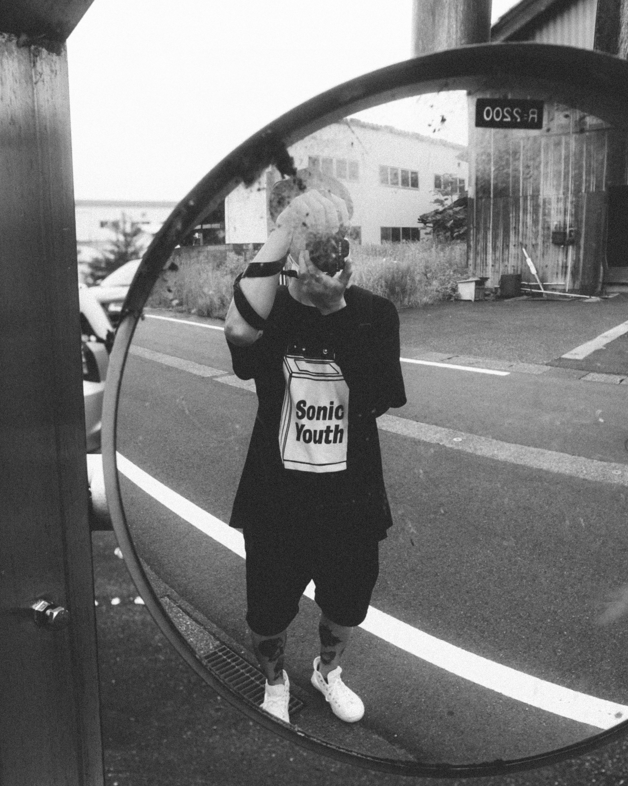
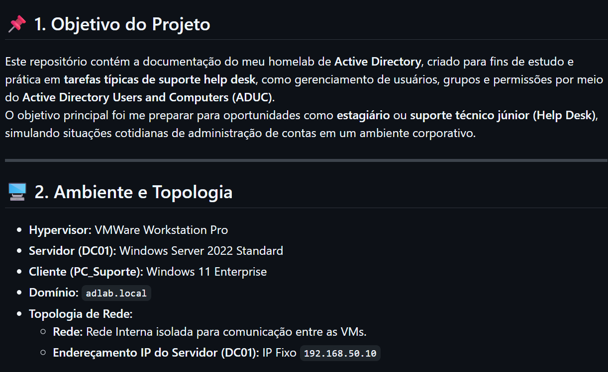
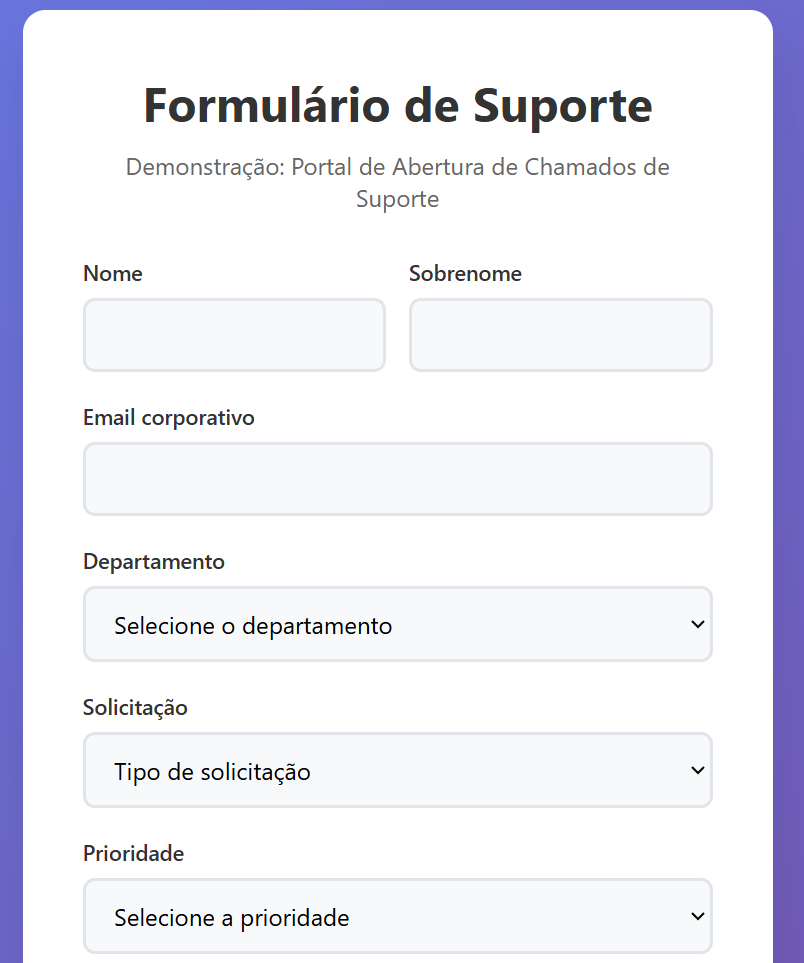
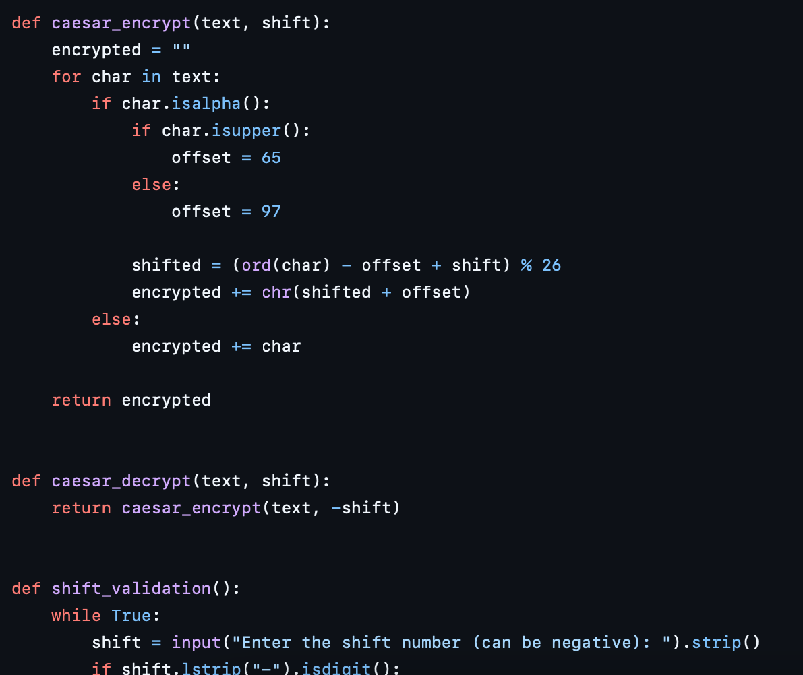

Entusiasta de Ciência da Computação
e fotógrafo profissionalmente-amador, de vez em quando.

Projetos

Projeto: Homelab de Active Directory & Windows Server
Documentação do meu projeto de infraestrutura de TI. Simulei um ambiente corporativo, instalando e configurando o Windows Server 2022, Active Directory (AD DS), OUs, GPOs, entre outros, para gerenciamento de usuários.
Ver Documentação no GitHub

Demo: Portal de Abertura de Chamados (Service Desk)
Simulação de um portal de Service Desk. O formulário (HTML/CSS/JS) captura e categoriza chamados usando conceitos de ITIL (Incidente vs. Requisição, Prioridade) e envia os dados para uma planilha via API.
Ver Formulário

Criptografia (Caesar Cipher) - Projeto para o Code in Place 2025
Script de console em Python para criptografia e descriptografia de
mensagens, utilizando a clássica Caesar Cipher como método. Funciona deslocando o posicionamento
de cada letra da mensagem por um número fixo de posições no alfabeto.
Projeto Final para o
Code in Place 2025, da Stanford University.
Ver código no GitHub
Sobre
Graduando de Ciência da Computação, em transição de carreira e atuando em Infraestrutura de TI.
Interesse em Cibersegurança, DevOps e qualquer coisa "Linux-related".
O que estou fazendo atualmente:
- Segurança e automação:
No momento conciliando trabalho com estudos para criar um SIEM caseiro, visando disparo de alertas e dashboards de logs (Google Workspace + API Admin Reports + Looker Studio + VPS com n8n). - Linux e redes:
Estudos práticos de Administração Linux, Bash Scripting e análise de rede com Nmap e Wireshark.
Objetivos futuros:
Obter as certificações CompTIA Security+ e AWS Certified Cloud Practitioner até o final do ano.
Idiomas: Inglês Avançado, Japonês Intermediário (JLPT N3).
Contrate-me
Contate-me